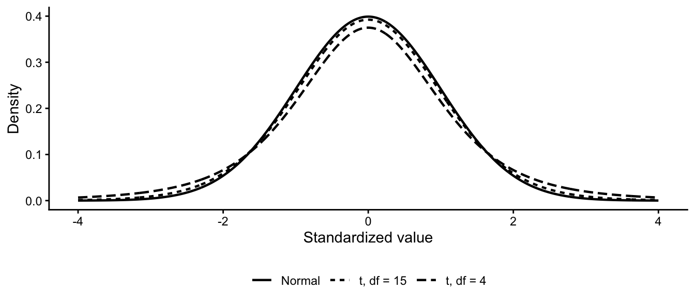

12 The t-Distribution
12.1 The Question
NoteCentral question
How can we test a claim about one population mean when population variability is unknown?
The previous chapters used the normal distribution to develop the logic of confidence intervals and hypothesis testing. In practice, however, we rarely know a population’s standard deviation. We estimate it using the sample standard deviation, which introduces additional uncertainty.
The t-distribution accounts for that uncertainty. It allows us to test a claim about one population mean while recognizing that the population standard deviation must also be estimated.
12.2 What You Will Learn
After completing this chapter, you should be able to:
- Explain why inference about a mean generally uses the t-distribution.
- Describe how the t-distribution differs from the standard normal distribution.
- Calculate degrees of freedom and select a critical t-value.
- Conduct and interpret a one-sample t-test.
- Explain how sample size affects the critical value.
- Identify important assumptions and limitations of a one-sample t-test.
12.3 Why Use the t-Distribution?
A z-test for a mean assumes that the population standard deviation, \(\sigma\), is known. Usually it is not. Instead, we estimate it using the sample standard deviation, \(s\):
\[ \widehat{SE}_{\bar{x}}=\frac{s}{\sqrt{n}} \]
Because \(s\) varies from sample to sample, this estimate introduces uncertainty beyond ordinary sampling variability. The t-distribution accounts for that uncertainty.
Like the standard normal distribution, a t-distribution is:
- symmetric around zero;
- bell-shaped; and
- used to calculate probabilities and critical values.
Unlike the standard normal distribution, it has heavier tails. The heavier tails require stronger evidence before rejecting a null hypothesis.
12.4 Degrees of Freedom
There is one standard normal distribution but many t-distributions. The appropriate shape depends on the degrees of freedom, abbreviated \(df\).
For a one-sample t-test:
\[ df=n-1 \]
Small samples have fewer degrees of freedom, heavier tails, and larger critical values. As sample size increases, the t-distribution approaches the standard normal distribution.
Appendix B, Student’s t-Distribution Critical Values, provides the critical values used in this chapter.
12.5 Using the t Table
To select a critical value:
- Determine whether the alternative hypothesis is one-tailed or two-tailed.
- Select the significance level, \(\alpha\).
- Calculate the degrees of freedom.
- Find the appropriate row and column in the t table.
- Use a negative critical value for a left-tailed test.
For example, if \(n=9\):
\[ df=9-1=8 \]
At \(\alpha=0.05\), the critical values are:
| Alternative | Critical value |
|---|---|
| \(H_A:\mu>\mu_0\) | \(1.860\) |
| \(H_A:\mu<\mu_0\) | \(-1.860\) |
| \(H_A:\mu\ne\mu_0\) | \(\pm2.306\) |
WarningChoose the test before examining the result
The research question determines whether the test is one-tailed or two-tailed. Do not choose the smaller critical value after seeing the sample mean.
12.6 The One-Sample t-Test
The one-sample test statistic is:
\[ t=\frac{\bar{x}-\mu_0}{s/\sqrt{n}} \]
The formula resembles the z-statistic. The important change is that the decision is based on a t-distribution with \(n-1\) degrees of freedom.
12.7 Worked Example: Motion Processing Times
The Court of Reasonable Expectations claims that the mean processing time for a routine motion is 10 minutes. A defense attorney believes the true mean is greater. A random sample produces:
\[ n=9,\qquad \bar{x}=12,\qquad s=3 \]
12.7.1 Step 1: State the Hypotheses
\[ H_0:\mu=10 \]
\[ H_A:\mu>10 \]
This is a right-tailed test.
12.7.2 Step 2: Calculate the Standard Error
\[ \widehat{SE}_{\bar{x}}=\frac{3}{\sqrt{9}}=1 \]
12.7.3 Step 3: Calculate the Obtained Statistic
\[ t=\frac{12-10}{1}=2.00 \]
12.7.4 Step 4: Find the Critical Value
\[ df=9-1=8 \]
For a right-tailed test with \(\alpha=0.05\) and \(df=8\):
\[ t_{critical}=1.860 \]
12.7.5 Step 5: Decide and Interpret
Because:
\[ 2.00>1.860 \]
we reject \(H_0\). At the 0.05 level, the sample provides evidence that the population mean processing time exceeds 10 minutes.
If the alternative had been two-tailed, the critical value would be \(2.306\). In that case, we would fail to reject \(H_0\). As before, the direction of the alternative matters.
12.8 Assumptions and Study Design
The calculation alone does not guarantee a valid conclusion. Before interpreting a one-sample t-test, ask whether:
- the outcome is quantitative and measured consistently;
- the observations are sufficiently independent;
- the sample was selected through a defensible process;
- severe skew or influential outliers make the sample mean misleading; and
- the sample represents the population named in the conclusion.
The t-distribution accounts for uncertainty created by estimating the population standard deviation. It does not correct biased sampling, poor measurement, or an inappropriate research design.
ImportantStatistical significance has limits
A statistically significant result indicates that the sample mean is difficult to reconcile with the value proposed by the null hypothesis. It does not establish practical importance or explain why the population mean differs.
12.9 Test Your Knowledge: Emergency Response Times
A response agency claims the population mean response time is 96 minutes.
12.9.1 Case 1
\[ n=16,\qquad \bar{x}=97,\qquad s=4.5,\qquad H_A:\mu>96 \]
12.9.2 Case 2
\[ n=25,\qquad \bar{x}=95,\qquad s=9,\qquad H_A:\mu<96 \]
12.9.3 Case 3
\[ n=9,\qquad \bar{x}=30,\qquad s=40,\qquad H_A:\mu\ne96 \]
For each case, calculate the obtained t, degrees of freedom, critical value for \(\alpha=0.01\), and decision.
NoteCheck your answers
| Case | Obtained t | \(df\) | Critical value | Decision |
|---|---|---|---|---|
| 1 | \(0.89\) | 15 | \(2.602\) | Fail to reject \(H_0\) |
| 2 | \(-0.56\) | 24 | \(-2.492\) | Fail to reject \(H_0\) |
| 3 | \(-4.95\) | 8 | \(\pm3.355\) | Reject \(H_0\) |
The critical values differ because the sample sizes—and therefore the degrees of freedom—differ. Case 3 is two-tailed, which also requires a larger absolute critical value.
12.10 Data Investigation: Testing One Mean
Using a quantitative variable from class or project data:
- Calculate the sample size, mean, and standard deviation.
- Select a substantively meaningful population value for comparison.
- State the null and alternative hypotheses.
- Identify whether the test is one-tailed or two-tailed.
- Calculate the standard error, degrees of freedom, and obtained t.
- Use the t table to make a decision.
- Interpret the result and identify one limitation.
12.11 Project Connection
- Identify a population mean relevant to your semester project.
- State a proposed value as the null hypothesis.
- Write a substantively meaningful alternative hypothesis.
- Explain whether a one-sample t-test would be appropriate.
- Identify one sampling, measurement, or design limitation that should accompany the result.
12.12 Looking Ahead
This chapter used the t-distribution to compare one sample mean with a proposed population mean. Chapter 13 extends the same logic to a new question: whether the difference between two independent sample means is larger than we would expect from sampling variability.
12.13 Chapter Summary
- The t-distribution accounts for uncertainty created by estimating population variability with a sample standard deviation.
- Smaller samples produce heavier-tailed t-distributions and larger critical values.
- A one-sample t-test compares a sample mean with a proposed population mean.
- The test statistic uses the estimated standard error, \(s/\sqrt{n}\).
- Degrees of freedom for a one-sample test equal \(n-1\).
- The alternative hypothesis determines whether the test is right-tailed, left-tailed, or two-tailed.
- Statistical significance does not establish practical importance or repair weaknesses in sampling, measurement, or design.
12.14 Key Terms
- Degrees of freedom: A quantity that determines which t-distribution and critical value to use.
- One-sample t-test: A test comparing one sample mean with a proposed population mean.
- t-distribution: A family of symmetric probability distributions with tails that reflect uncertainty from estimating population variability.
- t-statistic: A standardized difference expressed in estimated standard-error units.